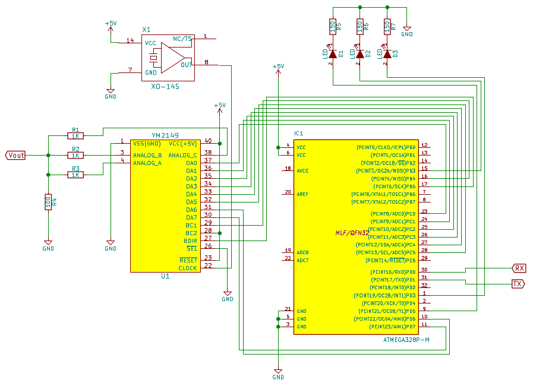
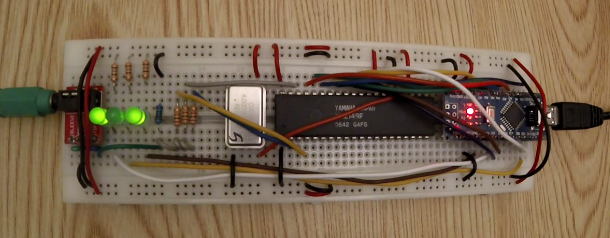

Playing SNDH on YM2149
This is the sequel of the Streaming music to YM2149 post. After
playing YM chip tunes on the YM2149, I wanted to take profit from the
super large database of SNDH files available online, by being
able to play these tunes on my YM2149. This has been possible with the
help of the SC68 emulator. sc68 can interpret sndh files and
generate a dump of the samples to be played on the chip. While most
sndh files can be played by using the ym2149-sndh firmware and
scripts available on GitHub, there are still a number of files
that can't be played yet. This will be further discussed in the
limitations section. A video of the ATmega playing a Relix tune on
the YM2149 is available.
New hardware design
The previous circuit design described in Driving YM2149F sound chip with an Arduino would work for playing SNDH files. But I couldn't resist adding LEDs blinking in rhythm with the music played on the chip, hence this new design ; ). Since I am now using 2 timers to generate the 3 PWM signals used to light the LEDs + 1 timer to synchronize the samples, I added a 4 MHz oscillator feeding the YM2149 to generate its output (I used 1 of the 3 timers available on the ATmega to generate a 2 MHz clock in my former design). Besides, I replaced the Uno with a Nano, which fits on the bread board.
Hence this new schematic:

And the much nicer circuit there:

Samples format
Though I am super happy with my brand new circuit, the biggest change is in the firmware running on the AVR. It contains more logic, because it bufferizes samples coming from the UART, and sends them to the YM2149 at the good timing.
The current implementation is based on the following mechanism. A tune is sent to the YM2149/ATmega board as a stream of samples, where each sample has the following format:
-
2 bytes timestamp: This timestamp determines when the sample will be sent to the YM2149. The value corresponds to a number of YM clock cycles modulo 2^16. We can afford using a 2 bytes timestamp, because what really matters is the timestamp difference between 2 successive samples. This means that 2 samples can be theoretically spaced by 1 to 65536 YM clock cycles @2 MHz; so the maximum interval between 2 samples is 32 ms, corresponding to a minimum frequency of 31 Hz. This is ok because most SNDH tunes refresh some registers at least at 50 Hz, and we can add empty samples if we really need.
-
2 bytes per register to update (from 0 to 16 registers, though only the 14 first registers are meaningful to play sound on the chip): 1 byte address, identifying the register to update; 1 byte value, corresponding to the value that has to be stored at the address specified right before
-
1 'end of sample' byte (0xff): This byte indicates the end of a sample.
As a result, the smallest 'useful' sample is 5 bytes long for 1 register update; a 2 registers update sample is 7 bytes long; and the longest sample is 31 bytes long (3 + 2*14, not considering registers 15 & 16).
Limitations
The bottleneck to play sndh tunes to the YM2149 chip is the speed at which we can update the chip's registers. New tunes use so called 'digital' sounds, that may have intervals as small as 90 clock cycles (i.e 22 KHz).
We have 2 limitations:
-
The speed at which the AVR can get a sample from the UART and update the YM2149 registers. Let's consider a 1 register sample of 5 bytes length. With this implementation, the AVR needs around 150 AVR clock cycles (@16 MHz) to transfer 1 byte from the UART to the buffer, hence 750 clock cycles for 5 bytes. Then it needs some additional 300 clock cycles (rough estimate) to update the YM register from the data stored in the buffer. Therefore, we need a total of 1050 clock cycles @16 MHz per sample, corresponding to 131 clock cycles at 2 MHz, or 15 KHz max for digital sounds.
-
The UART speed. The ATmega328p together with the CH340 USB to serial chip can transfer data at a 1 Mbps rate without error (There is a 2x speed mode in the ATmega, but I incurred a significant amount of errors on the data transferred at that speed). With 10 bits per byte, the theoretical transfer rate is 100 KBytes/sec. In practice, the maximum speed depends on the size of data blocks sent (processes context switching on the OS is very expensive when doing I/Os with small blocks). I reached around 60 KBytes/sec using a 1500 buffer in the AVR. Considering 5 bytes per sample, we can stream samples at a maximum speed of 12 KHz.
With this implementation and its corresponding limitations, we can play digital sounds at up to 12 KHz. This can be improved by many ways:
-
by optimizing/redesign the code running on the AVR to reduce the number of cycles needed per sample
-
by reworking the samples format to reduce the average number bytes per sample, especially for small samples
-
by using a faster CPU, more RAM (bigger buffer), and possibly faster communication channel
A first compromise would be to write a PC side code to downsample tunes with a too high sample rate (i.e playing at 12 KHz sounds normally played at 22 KHz). This would lower the sound quality of the tunes downsampled, but would allow us to play them on this YM2149/ATmega implementation.
The schematic and source code to play sndh files on the YM2149 is available on GitHub.